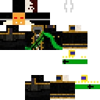
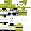
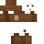
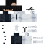
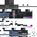
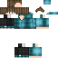
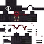

01

Основатель
Дарын
Создатель и глава Костании. Определяет направление развития клана и связывает его основные эпохи.
 KOSTANYAARCHIVE
KOSTANYAARCHIVE
Люди Костании
Первый состав цифрового архива: руководство, командование, ветераны, PvP-игроки и участники, развивающие Костанию.
Первый состав
Карточки будут постепенно дополняться датами вступления, достижениями, цитатами, связанными событиями и архивными материалами.

Создатель и глава Костании. Определяет направление развития клана и связывает его основные эпохи.

Левая рука Дарына и один из ключевых представителей высшего командования Костании.

Старший администратор и ветеран Костании, связанный с управлением и преемственностью клана.

Генерал армии Костании и представитель высшего военного командования клана.

Фельдмаршал и PvP-игрок, представляющий боевое направление Костании.

PvP-игрок Костании и участник боевого направления клана.

Участник Костании и создатель цифрового архива, сохраняющего историю, людей и материалы клана.
Это первая версия состава. Порядок, формулировки ролей и описания можно уточнять по мере наполнения архива.